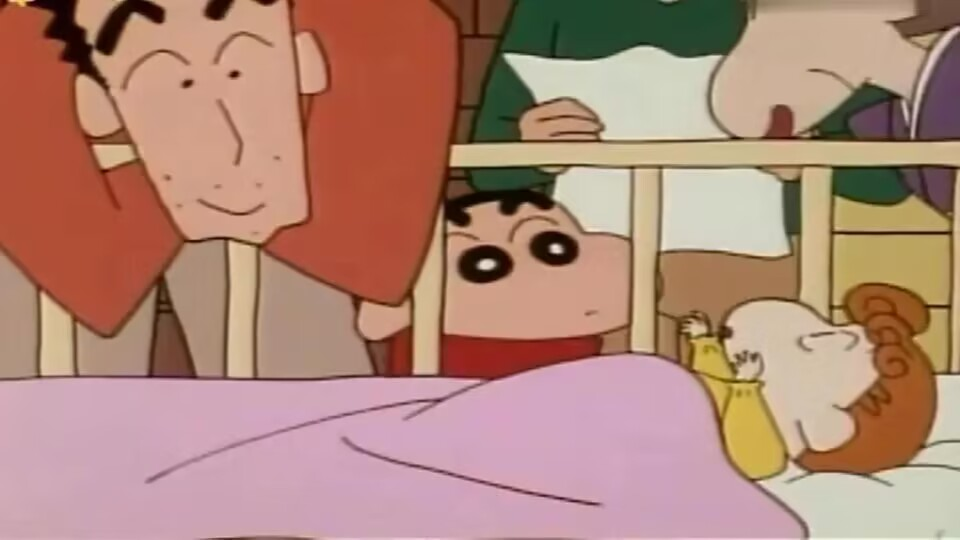

起初，家里每个人对小葵的名字有不同的叫法和建议。野原新之助称呼为“阿新（おしん）”，野原美冴称呼为“美沙子（みさこ）”，野原广志称呼为“广美（ひろみ）”。总之，三人起的名字都跟自己的名字有关联。“阿新（おしん）”来源于小新的名字“新之助（しんのすけ）”或者是小新的爱称「しんちゃん」。“美沙子（みさこ）”来源于“美冴（みさえ）”。“广美（ひろみ）”来源于“广志（ひろし）”。 在幼儿园，妮妮提议用自己的名字“妮妮（ネネ）”、“妮妮咪（ネネ咪）”，正男提议用吉永老师的名字“绿（みどり）”，阿呆则提议用《飘》女主角的名字“贺思嘉”，贺思嘉·野原。 最后，野原新之助的爷爷野原银之介用野原家代代相传的命名方式：把想要取的名字写在纸飞机上，谁的纸飞机在半空中飞得久，就能成为小宝宝的名字。野原银之介写的名字是“银子（ぎん子）”，野原鹤写的名字是“龟（かめ）”，野原广志写的名字是“理惠（りえ）”，野原美冴写的名字是“柚穗（ゆずほ）”，野原新之助写的是“向日葵（ひまわり）”。结果，野原新之助的飞机飞得最久，且落在了小葵的床上。小葵的名字就决定为“向日葵（ひまわり）”。
名字由来
起初，家里每个人对小葵的名字有不同的叫法和建议。野原新之助称呼为“阿新（おしん）”，野原美冴称呼为“美沙子（みさこ）”，野原广志称呼为“广美（ひろみ）”。总之，三人起的名字都跟自己的名字有关联。“阿新（おしん）”来源于小新的名字“新之助（しんのすけ）”或者是小新的爱称「しんちゃん」。“美沙子（みさこ）”来源于“美冴（みさえ）”。“广美（ひろみ）”来源于“广志（ひろし）”。 在幼儿园，妮妮提议用自己的名字“妮妮（ネネ）”、“妮妮咪（ネネ咪）”，正男提议用吉永老师的名字“绿（みどり）”，阿呆则提议用《飘》女主角的名字“贺思嘉”，贺思嘉·野原。 最后，野原新之助的爷爷野原银之介用野原家代代相传的命名方式：把想要取的名字写在纸飞机上，谁的纸飞机在半空中飞得久，就能成为小宝宝的名字。野原银之介写的名字是“银子（ぎん子）”，野原鹤写的名字是“龟（かめ）”，野原广志写的名字是“理惠（りえ）”，野原美冴写的名字是“柚穗（ゆずほ）”，野原新之助写的是“向日葵（ひまわり）”。结果，野原新之助的飞机飞得最久，且落在了小葵的床上。小葵的名字就决定为“向日葵（ひまわり）”。

日常生活
最喜欢做的事：看帅哥写真集、看珠宝传单、喝牛奶、找到发亮的东西和珠宝。
有时候为了想做自己喜欢的事，有时会调皮捣蛋然后嫁祸给野原新之助，虽然导致哥哥被妈妈骂，但小葵其实很喜欢哥哥。
还有的时候会幻想自己和帅哥在一起的快乐情景，但常常被现实打脸。
最讨厌的事物：看“书”（帅哥写真集）的时候被哥哥打扰、被哥哥欺负、无法俘获自己喜欢的帅哥的真心、发亮的东西被抢走、哥哥吃了小葵的点心（或不给小葵吃）、钻石传单被哥哥折纸飞机。
最喜欢的东西：点心、路过的帅哥、亮闪闪的东西（比如钻石项链、钻石戒指等）、帅哥写真集。
最害怕的东西：爸爸的臭袜子。